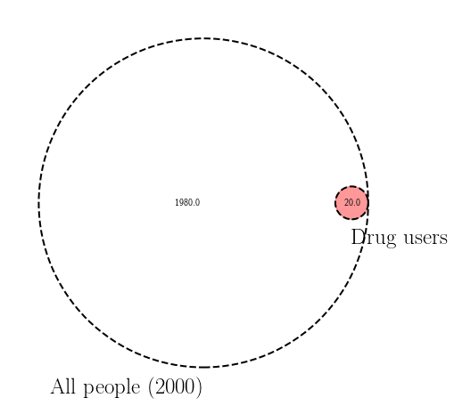

Consider a small town where 1% of the people are active drug users. Aimed with all the power of medical testing and knowledge of Venn diagrams, our goal is to find them!
from __future__ import division
from matplotlib import pyplot as plt
import numpy as np
from matplotlib_venn import venn2, venn2_circles
plt.rc('text', usetex=True)
plt.figure(figsize=(8, 8))
population, drug_chance = 2000, 0.01
drug_users = population * drug_chance
clean = population - drug_users
subsets = (clean, 0, drug_users)
v = venn2(subsets)
c = venn2_circles(subsets, linestyle='dashed')
# fill the intersection patches
v.get_patch_by_id('10').set_color('white')
v.get_patch_by_id('11').set_color('red')
v.hide_zeroes()
v.get_label_by_id('B').set_text(r'$\mathrm{Drug~users}$')
v.get_label_by_id('B').set_fontsize(25)
v.get_label_by_id('A').set_text(r'$\mathrm{{All~people~({})}}$'.format(population))
v.get_label_by_id('A').set_fontsize(25)
plt.show()

Inspired by Nixon’s late 60’s policies, we have developed a test that catches the vile criminals by detecting trace amounts of the substance, but - alas - our pharma R&D department tells us that it has only a 95% success rate. That is, it has a 5% chance to show that a healthy member of the silent majority is a drug abuser and a 5% chance to identify a drug user as being clean.
With this in mind, let’s pose a question - if we stop random passerbys and they test positive, what are chances of them being active drug users?
from matplotlib import pyplot as plt
import numpy as np
from matplotlib_venn import venn3, venn3_circles
test_success = 0.95
test_failure = 1 - test_success
plt.rc('text', usetex=True)
plt.figure(figsize=(8, 8))
negative_if_clean = clean * test_success # true negatives
positive_if_clean = clean * test_failure # false positives
positive_if_addict = drug_users * test_success # true positives
negative_if_addict = drug_users * test_failure # false negative - got lucky this time!
if population < 2000:
foo = {'ndigits': 2}
else:
foo = {}
subsets = [round(i, **foo) for i in [negative_if_clean, 0, negative_if_addict,
0, positive_if_clean, 0, positive_if_addict]]
v = venn3(subsets, set_labels = ('A', 'B', 'C'))
c = venn3_circles(subsets, linestyle='dashed')
# fill the intersection patches
v.get_patch_by_id('10').set_color('white')
v.get_patch_by_id('111').set_color('red')
v.get_patch_by_id('101').set_color('blue')
v.get_patch_by_id('110').set_color('black')
v.hide_zeroes()
v.get_label_by_id('B').set_text(r'$\mathrm{Drug~users}$')
v.get_label_by_id('B').set_fontsize(25)
v.get_label_by_id('A').set_text(r'$\mathrm{{All~people~({})}}$'.format(population))
v.get_label_by_id('A').set_fontsize(25)
v.get_label_by_id('C').set_text(r'$\mathrm{Tested~positive}$')
v.get_label_by_id('C').set_fontsize(25)
plt.annotate(r'$\mathrm{The~lucky~bastard~that~got~away}$',
xy=v.get_label_by_id('110').get_position() - np.array([-0.01, 0]),
xytext=(+140,-70), ha='center', textcoords='offset points', size=17,
arrowprops=dict(arrowstyle='->', connectionstyle='arc3, rad=0.2',color='black'))
addicts_all = positive_if_addict + negative_if_addict
positive_all = positive_if_clean + positive_if_addict
addict_if_positive = ((positive_if_addict / addicts_all)
* (addicts_all / population) / (positive_all / population) * 100)
plt.annotate(r'$\mathrm{{Chance~of~catching~a~drug~user~given~a~positive~test:~{:.3f}\%}}$'.format(addict_if_positive),
xy=v.get_label_by_id('10').get_position() - np.array([0.3, +0.45]),
xytext=(+140,-70), ha='center', textcoords='offset points', size=22)
plt.show()
What you’re seeing is a graphical representation of the Bayes’ Theorem. Out of the people who tested positive, the biggest part (in blue) is due to the drug test failure!
Bayes’ Theorem
In probability theory, the chance of event A happening given that event B has occured is denoted as
$$P(A \mid B)$$,
and is called conditional probablitiy. In our small example, we were looking for a value of this:
$$P(\mathrm{drug~user}~ | ~\mathrm{positive~test})$$.
Conditional probablility, in Kolmogorov’s notation, can be written as a probability of joint events A and B occuring within the sample space of B:
$$ P(A \mid B)=\dfrac{P(A \cup B)}{P(B)},$$
or, in our terms,
$$ P(\mathrm{drug~user}~ | ~\mathrm{positive~test}) = \dfrac{P(\mathrm{drug~user}~ \cup \mathrm{positive~test})}{P(\mathrm{positive~test})} = \dfrac{19}{99 + 19} $$
In the setup for our problem, we are given the success probablity of the positive test for a drug user - the inverse of the conditional probablitiy above. We are getting to the heart of the Bayes’ theorem: the theorem that tells us how to flip conditional probabilities. Starting from the notation above:
$$ \dfrac{P(A \mid B)}{P(B)} = P(A \cup B) = P(B \cup A) = \dfrac{P(B \mid A)}{P(A)}, $$
It’s clear that the inverse conditional probablities relate through the sample space ratio:
$$ P(A \mid B)=\dfrac{P(B \mid A) P(A)}{P(B)} .$$
Bayes’ theorem is a solution to the prosecutor’s fallacy, which, in our case, can be concluded as follows: the fact that the drug test works yields positive 99% of the time on a drug user does not mean that a positive result from the drug test condemns an average person as a drug user.